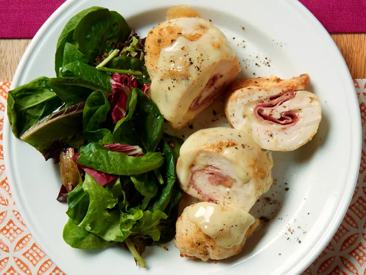

Chicken Cordon Bleu

Chicken Cordon Bleu
An easy and delicious chicken recipe that could be made in under an hour.
Ingredients
- nonstick cooking sparay
- 4 skinless, boneless chicken breast halves
- 1/4 teaspoon salt
- 1/8 teaspoon ground black pepper
- 6 slices of swiss cheese
- 4 slices cooked ham
- 1/2 cup seasoned bread crumbs
Instructions
- Gather all ingredients
- Preheat oven to 350 degrees F (175 degrees C). Coat baking dish with cooking spray.
- Pound chicken breasts to 1/4 thickness.
- Sprinkle each piece of chicken with salt and pepper.
- Place 1 piece of ham and cheese on top of each breast.
- Roll up each breast and secure with toothpicks.
- Place in baking dish and sprinkle evenly with bread crumbs.
- Bake for 30 to 35 minutes or until chicken is no longer pink inside.
- Remove from the oven and place 1/2 slice of cheese on top.
- Return to oven for 3 to 5 minutes, remove toothpicks and serve immediately.
Go Back